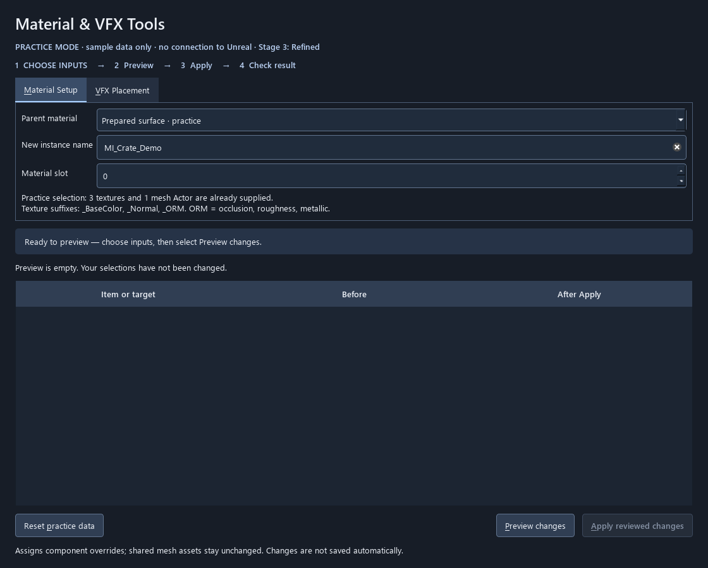
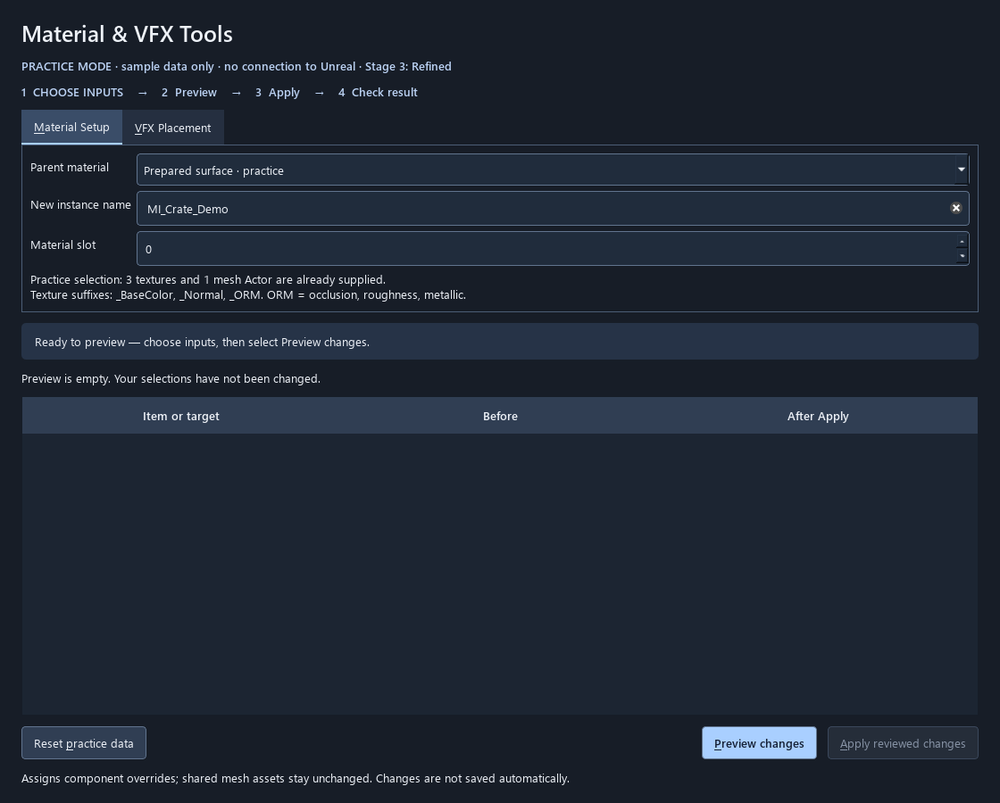
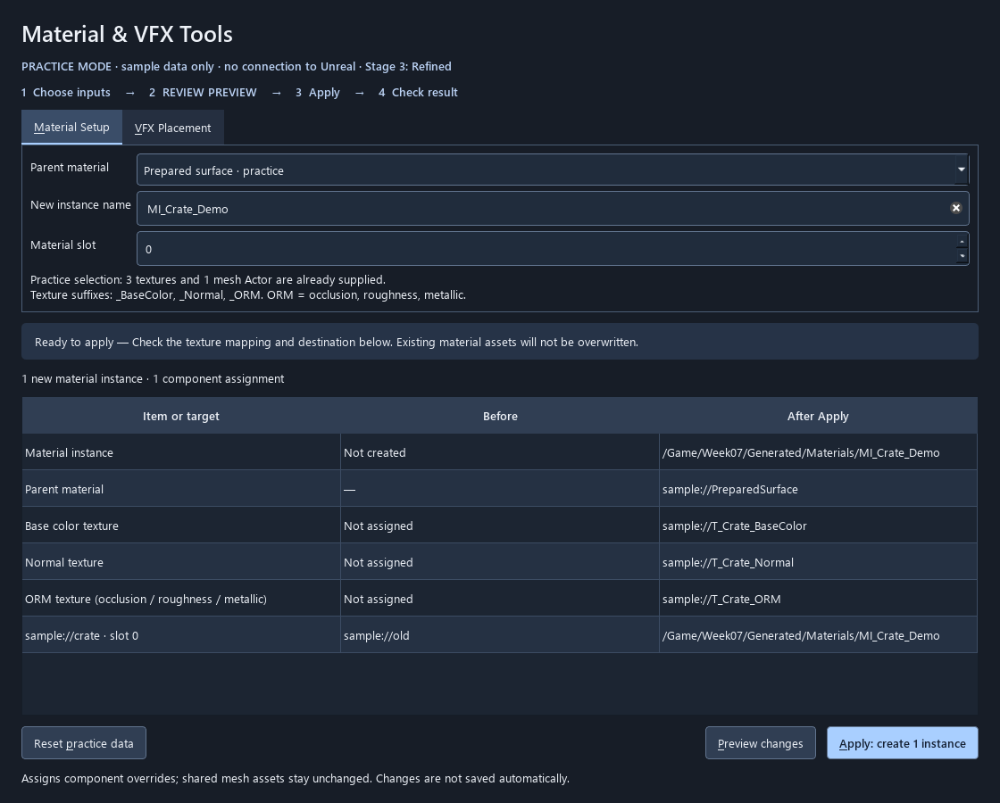
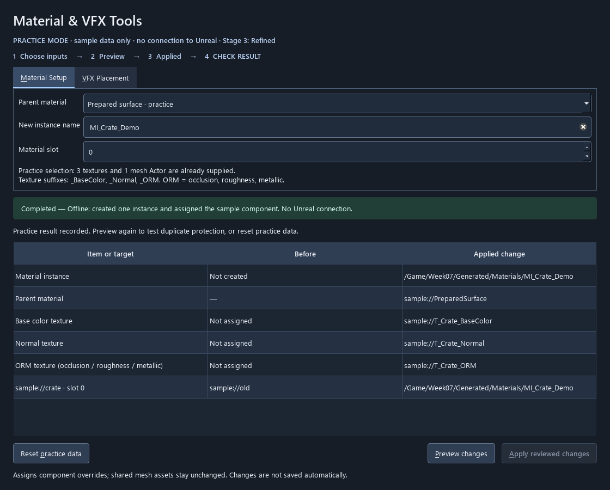
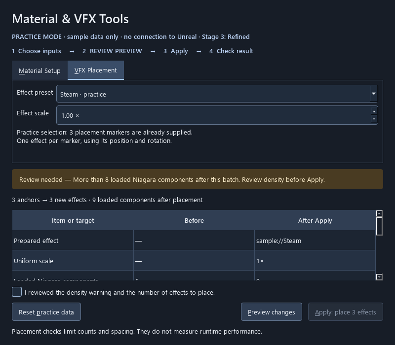

Demonstration readiness
The tools must demonstrate the rules
The current offline PySide assistants now emphasize the next available action, maintain explicit state and support a task-based focus order. Broader host and production validation remains separate and visible.
Concrete changes
- Preview receives primary emphasis before a plan exists; Apply receives it when the reviewed plan is ready.
- Warning acknowledgment and blocked states retain their guards. After completion, the result remains visible without encouraging an immediate repeated Apply.
- Action colors now have a small shared token source. Existing canvas colors remain in the legacy shared style; full token migration is not claimed.
- Keyboard order is explicitly set to follow the task; review surfaces receive visible focus styling.
- The style sheet records roles, states, layout rules, validation and the AI maintenance workflow.
Teaching-tool style sheet · Action tokens and QSS · Updated assistant · Local style-sheet skill example
Matched practice states
These captures use the same offline inputs and state. The refinement is intentionally focused; it preserves the established tool layout.
Starting: Preview is the next action




Reviewed plan: Apply becomes the next action



Completed: inspect the result



Narrow warning: acknowledge before Apply



Showcase inventory and remaining work
| Surface | What is prepared | Before showing it as a current polished example |
|---|---|---|
| PySide material / VFX | Updated action emphasis, style sheet and nine new captures; existing tests passed. | Material-start traversal was checked with actual offscreen Tab key events. Still verify all states, target display scaling and live engine selection/stale-state/recovery behavior. Replace stale deck crops and code excerpts when integrating. |
| Native Unreal Slate panel | Retained as a distinct native implementation; no claim that a parented Qt window is a docked native panel. | Check equivalent labels, scope, preview, guarded Apply and recovery in the actual panel. Capture current states and record any intentional host-specific differences. |
| Blender / Maya and other course demos | Included in the audit scope; existing teaching roles retained. | Inspect each UI that will actually appear, use a prepared task, check reset, labels, focus, errors and projection readability. Do not infer parity from PySide tests. |
| GOLF+ Course Generator / historical suite examples | The supplied six-stage Course Generator screenshot is the main visual example; older overlay and Spline Suite images remain process history. | No new capture is required to teach its visible hierarchy. Capture warning, progress and outcome only for claims about behavior or a matched before/after. Reconcile playbook terminology; no GOLF+ production code was changed. |
| Lecture screenshots and examples | Replacement evidence and exact current slide anchors are staged. | Replace obsolete screenshots during the deck integration; label practice data and conceptual telemetry. Render and inspect every changed slide. |
Implementation bridge
Use one short worked example: the material task, a low-fidelity flow, the real Qt layout and the state-driven Preview/Apply behavior. Let students trace one design rule into code. Keep the full implementation and native Slate comparison in the companion material. A second in-engine UI build would compete with the design lesson.
Figma is useful for testing flow before backend work. An Editor Utility Widget provides a familiar in-engine option, but it is a different implementation path from this project’s native C++ Slate panel. Choose the fidelity that answers the current question.
Verification record
Scripts/dev.py test: 87 passed. Scripts/assistants.py --render: nine refreshed states, generated 15 October 2026. Host restrictions were respected: no live Unreal launch. Contrast measurements and browser checks are recorded in verification.json after review validation.
Week 7 · prepared 15 October 2026 · local instructor review · current slide numbers refer to v15; lettered IDs are proposed insertions.